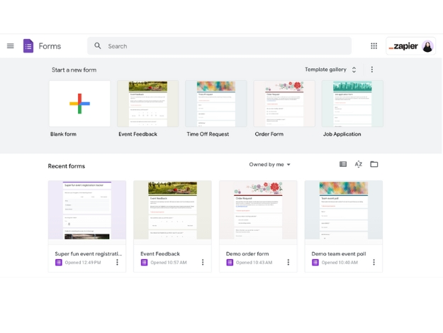
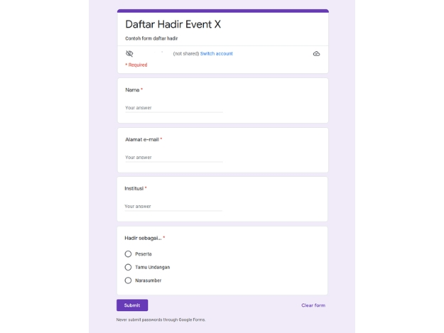
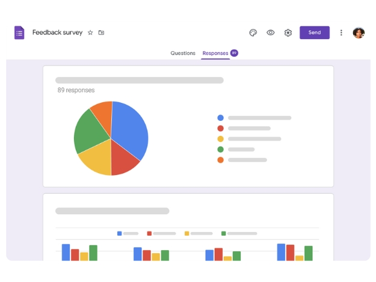

Loading...
PENGERTIAN FORMS
Forms, atau formulir, adalah alat yang digunakan untuk mengumpulkan informasi dan pengguna dalam format terstruktur. Dalam konteks pembelajaran, forms dapat digunakan untuk berbagai tujuan, seperti kuis, survei, pengumpulan tugas, dan umpan balik.
FUNGSI DAN MANFAAT FORMS DALAM PEMBELAJARAN
A. Pengumpulan Data
B. Evaluasi dan Penilaian
C. Interaksi dan Keterlubatan Siswa
D. Aksebilitas
E. Integrasi Forms dengan Media Berbasis Web
TANTANGAN DALAM PENGGUNAAN FORMS DAN MEDIA BERBASIS WEB
A. Keterbatasan Akses
B. Masalah Teknologi
C. Ketidakpuasan Pengguna
METODE PEMBUATAN FORMS

A. Pemilihan Platform:
Google Forms, Microsoft Forms, Typeform, JotFrom.

B. Desain Forms:
Tentukan Tujuan, Susun Pertanyaan, Atur Alur Pertanyaan.

C. Pengujian Forms:
Uji Coba Internal, Kumpulkan Umpan Balik.
IMPLEMENTASI FORMS DALAM PEMBELAJARAN
A. Penyampaian Forms kepada Siswa
B. Penggunaan Forms dalam Aktivitas Pembelajaran
C. Monitoring dan Analisis
D. Evaluasi
Kesimpulan
Penggunaan forms dalam pembelajaran berbasis web terbukti
memberikan banyak manfaat,
seperti efisiensi dalam pengumpulan data,
peningkatan interaksi antara guru dan siswa,
serta kemudahan dalam evaluasi dan penilaian.
Forms memungkinkan guru untuk mendapatkan
umpan balik secara real-time dan menyesuaikan
metode pengajaran sesuai kebutuhan siswa.
Media berbasis web juga memperluas aksebilitas
pembelajaran, memungkinkan siswa untuk belajar
kapan saja dan dimana saja. meskipun terdapat
tantangan, seperti keterbatasan akses teknologi dan
masalah teknis, dengan startegi implementasi yang baik,
forms dapat menjadi alat yang efektif dalam meningkatkan
kualitas pendidikan.
Saran
1. Pelatihan Intensif: Disarankan untuk mengadakan pelatihan bagi
guru dan siswa mengenai penggunaan forms dan media berbasis web
agar semua pihak dapat memanfaatkan teknologi dengan optimal
2. Pengembangan Materi yang Menarik:Pihak sekolah perlu memastikan bahwa konten dalam forms relevan dan menarik, untuk meningkatkan keterlibatan siswa dalam proses belajar.
3. Evaluasi dan Umpan Balik:Melakukan evaluasi secara berkala terhadap penggunaan forms dan media berbasi web untuk mendapatkan umpan balik yang konstruktif dan pengguna, guna meningkatkan efektivitas dan kepuasan.